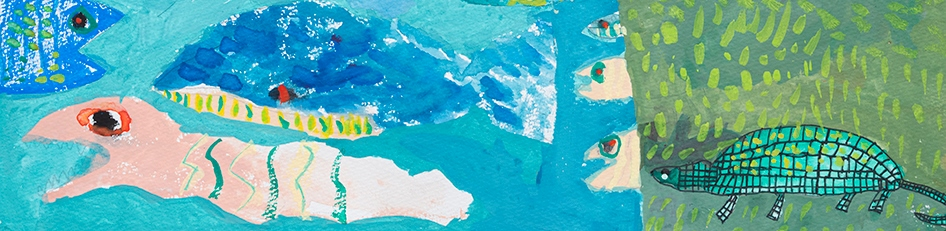

The Montessori Method has a considerable influence on the development of the preschool child. Smart Steps Montessori is an extension of that environment. Children around age two need a second environment — a Montessori one. This is something parents owe to their child, so that they have the freedom to develop their physical, intellectual, and academic powers to the fullest.
Classes have a vertical age structure spanning three years. Younger children learn by observation and absorption of older children's work, while older children teach the younger ones — gaining a greater depth of understanding, confidence, and competence.
The Montessori approach is child-centered, allowing each child to unfold in an atmosphere of cooperation rather than competition. Students have an individual work plan which the teacher and student prepare and oversee together.
Maria Montessori designed the Prepared Environment to satisfy the child's differing needs. Children work with concrete, often self-correcting materials, so learning is self-directed and follows their own interests.
Children work spontaneously and, within limits, are free to choose their own work and pace. They learn respect for the rights and safety of others, care with materials, and to become a co-operative member of the group.

Every material isolates a single concept or skill and is designed to be self-correcting, so children build understanding — and confidence — through their own repetition and discovery.
See a typical day →